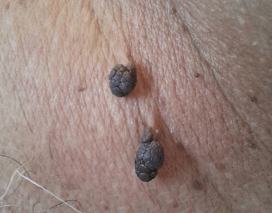

What is a Skin Tag?
A skin tag (acrochordon) is a common, possibly inherited condition that
manifests as small, flesh-colored growths on a thin stalk. Skin tags are benign
lesions that can sometimes become irritated or traumatized.

- A skin tag is a small, soft, benign skin growth, often on a stalk.
- Skin tags are probably the single most common bump on adult skin.
- Skin tags are harmless but can be annoying.
- Skin tags tend to occur on the eyelids, neck, armpits, groin folds, and under breasts.
- A person may have anywhere from one to hundreds of skin tags.
- Almost everyone will develop a skin tag at some point in their lives.
- Middle-aged, obese adults are most prone to skin tags.
- Obesity is associated with skin tags.
- Getting rid of a skin tag does not cause more to grow.
- Destructive treatments include freezing, strangulation with a ligature, snipping, and burning.
Skin tags are very common, and their incidence increases with age. Seen more often
in people with growth hormone excess (acromegaly), skin tags are sometimes associated
with acanthosis nigricans, a condition in which areas of skin may become thickened and velvety.
Skin tags are a type of harmless skin growth or benign tumor. Tags are generally not
cancerous (malignant) and don't become cancerous if left untreated.
There are extremely rare instances where a skin tag may become precancerous or cancerous.
Skin tag-like bumps that bleed, grow, or display multiple colors like pink, brown, red,
or black can require a biopsy to exclude other causes, including skin cancer.
Skin tags are most commonly found on the eyelids, neck, armpits, and groin area. They are
flesh-colored growths on a thin stalk, ranging in size from small to large.
Self-Care Guidelines
None necessary.
Skin tags are benign in nature, and, therefore, no treatment is necessary. However,
you should seek evaluation from a primary care provider or dermatologist if you are
either uncertain of the diagnosis or if the skin tags become irritated or painful.
It is important to keep in mind that skin tags usually do not have to be treated.
Deciding not to get rid of a skin tag is always a reasonable option if the growths
are not bothersome. If the tags are bothersome, multiple home and medical treatment
methods are available:
- Snipping with scissors.
- Freezing with liquid nitrogen (cryosurgery).
- Destroying it with an instrument providing a small of amount of electrical
current (electrodesiccation).
- Tie off the tag at its narrow base with a piece of dental floss or string.
There is no evidence that removing a skin tag will cause more tags to grow.
There is no expectation of causing skin tags to "seed" or spread by removing them.
In reality, some people are simply more prone to developing skin tags and may have
new growths periodically. Some individuals request periodic removal of tags at annual
or even quarterly intervals.
Are skin tags contagious?
No. There is no evidence to suggest that common skin tags are contagious
There are no currently medically approved creams for the removal of skin tags.
Skin tags are typically removed by physical methods like cutting off or tying off
with dental floss. It is not advisable to use unapproved products like Dermasil,
wart removers, tea tree oil, nail polish, toothpaste, or hair-removal creams like
Neet or Nair. Trial uses of unapproved creams may cause irritation and possible
secondary complications.
Compared to warts, skin tags are:
- smooth and soft (warts tend to be rougher with an irregular surface)
- knobbly and hang off the skin (warts are usually slightly raised or flat)
- not contagious (warts spread very easily, so a sudden outbreak or
cluster of growths is more likely to be warts)